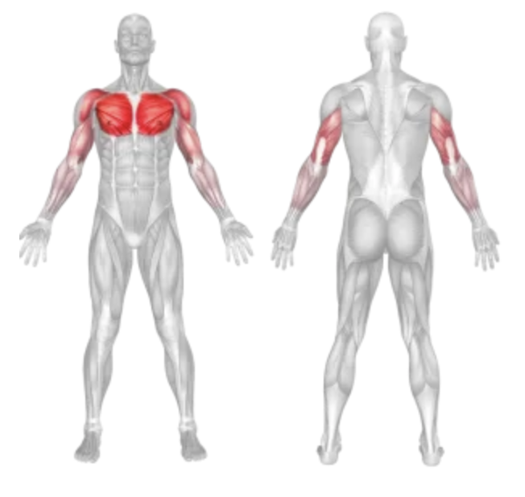

Lower Cable Cross Over Fly
Setup
Adjust the pulleys on a cable machine to the lowest setting.
Attach single-hand cable handles to each side.
Stand in the center with a staggered stance and hold a handle in each hand with palms facing up or slightly inward.
Step slightly forward to create tension in the cables and extend your arms downward and outward.
Execution
Lift:
Bring your hands upward and inward in a wide arc, maintaining a slight bend in the elbows.
Squeeze:
At the top, hands should meet around chest level; squeeze your chest for a second.
Return:
Slowly reverse the motion to return to the starting position with control.
Repeat for the desired number of reps.
Tips for Effectiveness
Use Light Weight First:
Begin with moderate resistance to master form and prevent shoulder strain.
Controlled Movement:
Avoid swinging or jerking the cables; focus on squeezing the chest.
Elbow Position:
Keep a soft bend in the elbows throughout to maintain tension on the chest.
Benefits of Lower Cable Cross Over Fly
Lower Chest Focus:
Specifically targets the lower pectoral muscles.
Improved Definition:
Helps enhance the separation and shape of the chest.
Full Range of Motion:
Encourages a greater stretch and contraction than some dumbbell or machine options.
Muscles Worked in Lower Cable Cross Over Fly

Do you want to change the language of this page?
English
Malayalam
Tamil
Hindi